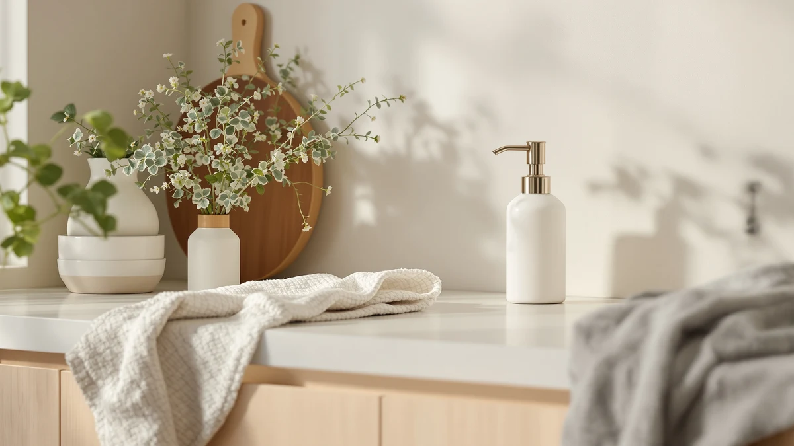

Best Foaming vs Liquid Soap Dispenser (2026) | Best Soap Dispensers
Prices and picks verified as of August 2026. Independent, reader-supported reviews.


Things to Know Before You Buy
- Foaming soap stretches further. A foaming pump whips a small amount of diluted soap with air, so a bottle of concentrate lasts far longer than the same volume in a liquid pump. That makes foaming the cheaper option per wash if you refill it yourself.
- Liquid soap takes any formula straight. You pour standard hand soap, dish soap, or lotion into a liquid dispenser with no mixing. A foaming pump needs thin, watery soap, so you dilute regular soap before it goes in.
- Foaming feels lighter; liquid feels richer. Foam spreads fast and rinses quick, which kids and quick hand-washers like. Liquid soap gives a thicker, more thorough lather that some people prefer for greasy hands.
- Pump design differs. A foaming pump has a finer mesh that can clog if you use thick soap. A liquid pump is simpler and handles heavier formulas, though it dispenses more soap per press.
- Both come in manual and automatic versions. You can buy a touchless model in either style, so hygiene is not the deciding factor between foaming and liquid.
The foaming vs liquid soap dispenser choice comes down to how soap leaves the pump and what it costs you over a year. A foaming dispenser turns a thin, diluted soap into airy lather, so you use less soap per wash. A liquid dispenser pushes out thicker soap straight from the bottle, with no mixing and a richer feel. Both clean your hands; they just get there differently.
Neither style wins outright. A foaming dispenser saves money and suits kids and quick hand-washers, while a liquid dispenser handles any soap you pour in and gives a heavier lather. We compare the two on build quality, price, and day-to-day use, then spell out who should pick which and point you to specific models worth buying.
Quick Answer
In the foaming vs liquid soap dispenser matchup, go foaming if you want to cut soap costs and you do not mind diluting soap to refill the pump. The light lather rinses fast, and kids take to it. Choose a liquid dispenser if you would rather pour any soap straight from the bottle and get a thicker lather for greasy hands, with a simpler pump that rarely clogs.
What is Foaming?
A foaming soap dispenser mixes air into thin, diluted soap and pushes the blend through a fine mesh, so what lands in your hand is already lather instead of liquid. The pump does the work that your hands normally do. You press once and get a soft dome of foam, so you skip the rubbing it normally takes to work up suds.
The trade-off in the foaming vs liquid soap dispenser question starts with the soap itself. A foaming pump only works with watery soap, so you either buy soap made for foaming or dilute regular hand soap, usually about one part soap to four or five parts water. That dilution is the source of the savings, since a little concentrate fills a whole reservoir of foam.
You feel the difference at the sink. Foam spreads over your hands in a second and covers more skin with less product. It rinses off fast too, since there is less soap to clear. Kids take to it, and quick hand-washers like that it does not leave a heavy film. The catch is the pump: its narrow mesh clogs if you pour thick soap in by mistake, and the foam, while gentle, can feel too light if you want a deep scrub after handling grease.
What is Liquid Soap Dispenser?
A liquid soap dispenser is the familiar pump that pushes soap out as a thick stream, the way most hand soap comes off the shelf. A spring-loaded pump draws soap up from the reservoir each time you press it, and the soap reaches your hand exactly as it sat in the bottle. You build the lather yourself by rubbing your hands together.
On the liquid side of the foaming vs liquid soap dispenser comparison, the big advantage is that you pour soap straight in. Standard hand soap, dish soap, even lotion go into the reservoir with no diluting and no special formula. The pump is a simple mechanical part, so it shrugs off thicker soaps that would clog a foaming mesh, and it rarely jams.
The feel is richer. A liquid dispenser delivers a heavier dose, so you get a thick, slippery lather that many people prefer after cooking or yard work, when hands are greasy and need more soap to cut through. That heavier dose is also the downside: you use more soap per wash, and it is easier to over-pump and send soap down the drain. A liquid pump suits anyone who wants a dispenser that takes whatever soap is on sale and works on the first press.
Head-to-Head: Build Quality & Durability
The pump is where foaming and liquid dispensers split on durability. A liquid pump holds up better over the long run because it is mechanically simple: a spring, a tube, and a nozzle, with a wide channel that thick soap moves through without trouble. Fewer fine parts means fewer ways to fail, and a well-made liquid pump keeps working for years.
A foaming pump asks more of its hardware. The fine mesh that turns soap into foam is the part that wears, and it clogs if you let soap dry inside it or pour in a formula that is too thick. Rinse the pump now and then and it lasts a long time, but it needs that small bit of care that a liquid pump does not.
The bottle matters as much as the pump in the foaming vs liquid soap dispenser decision. Both styles come in plastic, glass, ceramic, and stainless steel, and the material drives how long the unit survives a wet counter. A stainless or ceramic body shrugs off splashes and knocks, while a thin plastic shell cracks or stains over time. Pick a solid body in either camp and the build holds up; the liquid pump simply gives you one less delicate part to keep clean.
Head-to-Head: Price & Value
Upfront, the two cost about the same. A basic foaming or liquid pump runs well under $10, and nicer ceramic, glass, or stainless models land in the $15 to $24 range. The real difference in the foaming vs liquid soap dispenser cost shows up in the soap, not the hardware.
Foaming wins on running cost by a wide margin. Because a foaming pump turns a splash of diluted soap into a full reservoir of foam, you buy and use far less soap over a year. Refill a foaming dispenser with your own diluted soap and the savings add up fast, since one bottle of concentrate fills the reservoir many times over. A liquid dispenser uses soap straight, so you go through it quicker and replace bottles more often. If you want the lowest cost per wash, foaming is the better value; if you would rather skip the diluting step and buy soap ready to go, a liquid dispenser costs a bit more to run but saves you the chore.
Head-to-Head: Use Experience
Day to day, foam and liquid create two different routines at the sink. With a foaming dispenser you press once and start washing, since the soap arrives as lather already. Foam spreads over your hands in a second, rinses clean fast, and leaves no heavy residue, which is why kids and anyone in a hurry tend to like it. The lighter dose also means you rarely waste soap.
A liquid dispenser hands you a thicker blob that you work into a lather yourself. That extra second of rubbing pays off when your hands are greasy or really dirty, because the heavier soap cuts through grime that light foam glides over. The flip side is the over-pump problem: press too hard or too long and you get more soap than you need, then watch it run down the drain.
Refilling separates the two as well in the foaming vs liquid soap dispenser routine. You top off a liquid pump in seconds by pouring soap straight in. A foaming pump needs the diluting step, mixing soap with water before it goes in, which is a minor chore some people forget. Cleaning runs the other way: a foaming mesh needs an occasional rinse to stay clog-free, while a liquid pump mostly takes care of itself. Neither experience is worse, they just suit different hands and different moods.
When to Choose Foaming
Pick the foaming side of the foaming vs liquid soap dispenser split when saving soap and pleasing light users top your list. A foaming dispenser is the clear choice for family bathrooms with young kids, since the foam spreads easily over small hands and rinses fast, and it encourages more handwashing without much waste. It also suits anyone who hates over-pumping, because the diluted soap stretches a long way and the controlled dose keeps you from sending soap down the drain. Choose foaming if you are happy to refill the pump with your own diluted soap to cut cost per wash, and if you prefer a light, quick lather over a heavy one. A solid pick here is the Ginger Lily Farms foaming soap, which ships ready to use so you skip the diluting step.
When to Choose Liquid Soap Dispenser
Choose a liquid dispenser when you want to pour any soap straight in and get a richer lather. On the liquid side of the foaming vs liquid soap dispenser choice, the appeal is freedom: standard hand soap, dish soap, or lotion all work with no diluting and no special formula, so you buy whatever sits on sale. A liquid pump suits kitchens where greasy hands need the heavier dose to cut through grime, and it fits anyone who would rather skip the refilling chore that foaming demands. Its simple pump rarely clogs and handles thick soaps a foaming mesh would choke on. Go liquid if you value a no-fuss reservoir and a thorough scrub from a dispenser that works on the first press. The AIKE wall-mounted pump is a durable, high-capacity option for busy sinks.
Our Top Picks
After weighing both sides of the foaming vs liquid soap dispenser debate, these are the three models we keep coming back to, one for each main scenario.

Editor’s Pick
Ginger Lily Farms Foaming Soap
The easiest way into foaming soap: it arrives ready to use, lathers light, and rinses clean, with a plant-based formula that suits kids and sensitive hands.
$6.99
Check Price on Amazon
Best Value
AIKE 15fl.oz Liquid Soap Dispenser
A durable stainless steel wall-mounted liquid pump that holds plenty of soap, resists rust, and takes any standard soap you pour in. Built for busy kitchens and baths.
$18.89
Check Price on Amazon
Premium Choice
BRIGHTFROM Foaming Soap Dispenser Pump
A refillable glass foaming pump that turns a few cents of diluted soap into a full reservoir of foam, so your cost per wash stays low over the long haul.
$7.99
Check Price on AmazonIs a foaming or liquid soap dispenser more economical?
A foaming dispenser stretches soap further because it whips a small amount of diluted soap with air, so one bottle of concentrate lasts far longer than the same volume run through a liquid pump.
Can you put regular liquid soap in a foaming dispenser?
Not at full strength.
Frequently Asked Questions
Is a foaming or liquid soap dispenser more economical?
A foaming dispenser stretches soap further because it whips a small amount of diluted soap with air, so one bottle of concentrate lasts far longer than the same volume run through a liquid pump. A liquid dispenser uses more soap per press but lets you buy whatever hand wash is on sale. Over a year, foaming usually costs less per wash if you refill it with diluted soap yourself.
Can you put regular liquid soap in a foaming dispenser?
Not at full strength. A foaming pump needs thin, watery soap so its mesh can mix in air, so you dilute regular liquid soap with water, usually about one part soap to four or five parts water. Pour undiluted soap into a foaming dispenser and the pump clogs or jams. Liquid dispensers take soap straight from the bottle with no mixing.
Which is better for kids, foaming or liquid soap?
Foaming soap suits kids better. The foam spreads easily over small hands, rinses off fast, and the gentle pump dispenses a controlled dose, so a child wastes less than they would squeezing a liquid pump. The lighter lather also encourages more handwashing. Liquid soap works fine but tends to get over-pumped and end up down the drain.
Does foaming soap clean as well as liquid soap?
For everyday handwashing, yes. What removes germs is the scrubbing and the rinse, not the thickness of the lather, so 20 seconds of washing works the same with either. Liquid soap has an edge when your hands are greasy after cooking or yard work, since the heavier dose cuts through grime that light foam glides over. For normal use, both clean equally well.
Can you convert a liquid dispenser to a foaming one?
Not by swapping soap alone. A foaming dispenser needs a special pump with a fine mesh that mixes air into the soap, and a standard liquid pump lacks that part. You would need a dedicated foaming pump or bottle. The simplest path is to buy a foaming dispenser outright, then refill it with your own diluted soap.
Final Verdict
The foaming vs liquid soap dispenser choice has no single winner, only the right fit for your sink and your habits. Pick foaming if you want to cut soap costs and enjoy a light lather that rinses fast, and reach for the ready-to-use Ginger Lily Farms foaming soap as the easiest place to start. Choose a liquid dispenser, such as the durable AIKE wall-mounted pump, if you would rather pour any soap straight in and get a richer lather for greasy hands. Match the style to how dirty your hands get and how much fuss you want, and the dispenser will fade into your daily routine.